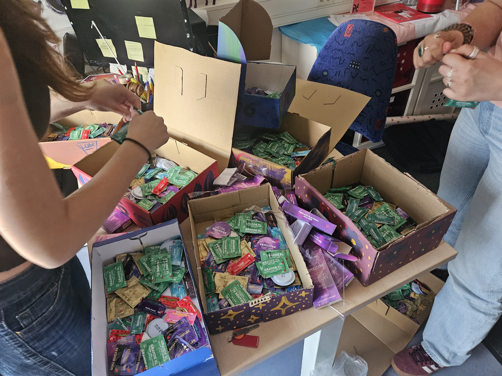
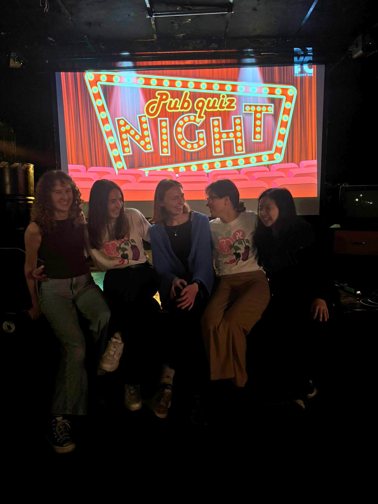
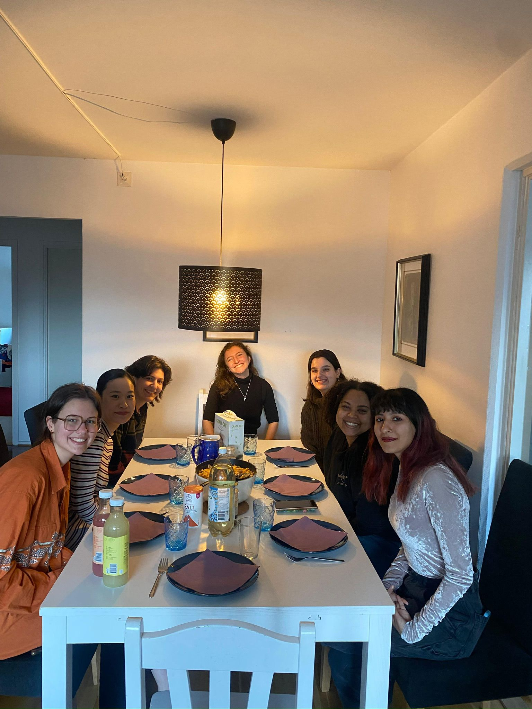
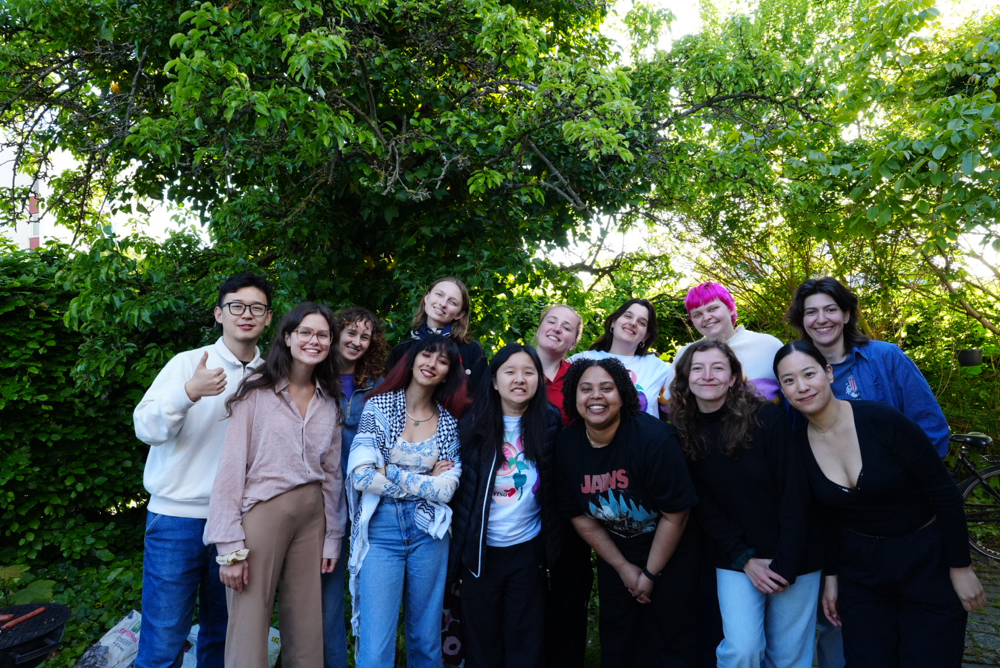
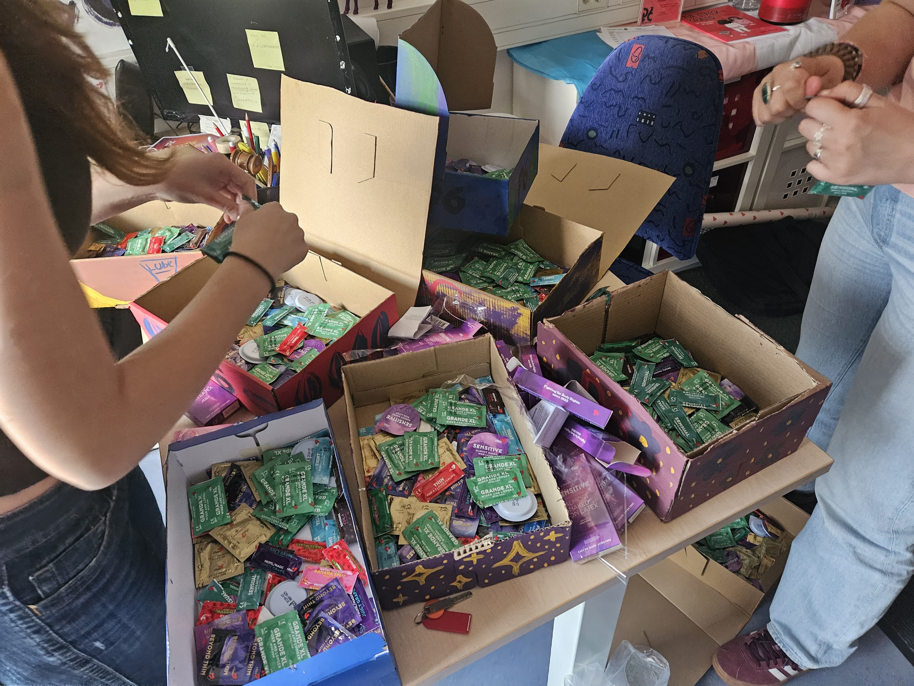
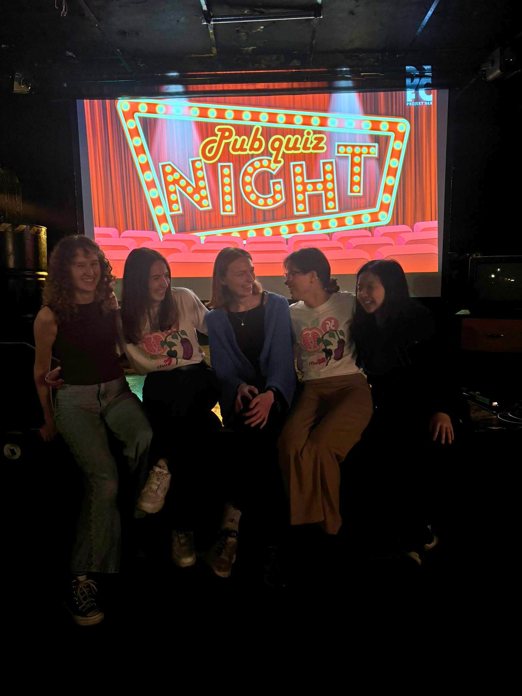
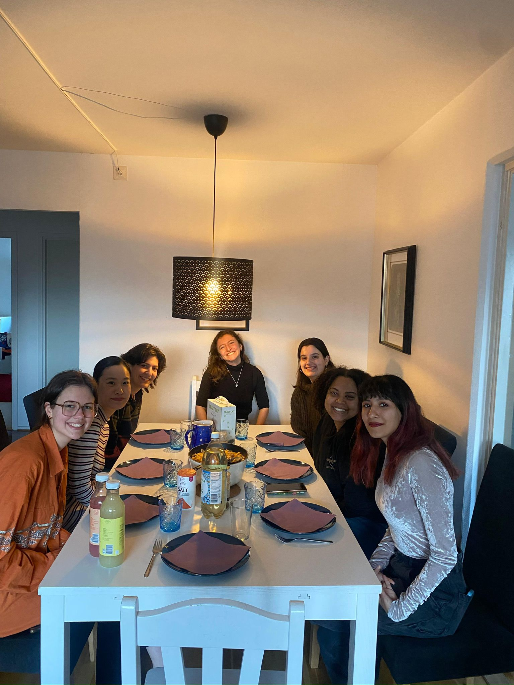
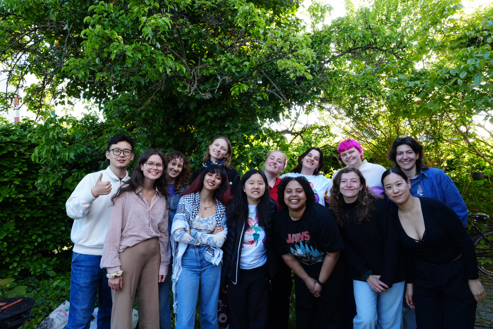

JOIN US
Our members are the heart of our organization, dedicated to promoting sexual health, inclusivity, and student well-being. Whether you're passionate about advocacy, education, creating safe spaces, or just wanting to meet new people, there's a place for you in one of our committees!
 







Committees
We are always looking for new members to join our committees! Membership is open to all students that are part of Studentlund. If you're interested in joining a committee, please fill out the form below.
LGBTQ+
The LGBTQ+ committee promotes inclusion, support, and visibility for LGBTQ+ students. We organize different events, raise awareness, advocate for equality, and provide safe spaces for the community. We work to create a welcoming campus environment where all identities are respected.
Education
The Education Committee focuses on producing educational events and workshops. We do everything from Sex-Ed Pub Quizzes and Movie Nights to Sexy Fikas. In our committee we try to spread education about sexual health in a receptive way and create spaces where people can openly discuss and learn about sexual health.
Social Media
The Marketing & Social Media team is responsible for everything you see online. We share event updates, educational content, and behind-the-scenes moments, all with a creative twist. Our aim is to build community, spark conversations, and spread the message of sexual health in a way that's fun and engaging.
Outreach
The Outreach team focuses on building connections with external organizations, student groups, and the broader community. They work to expand Projekt6's reach, foster collaborations, and promote our mission beyond the university.